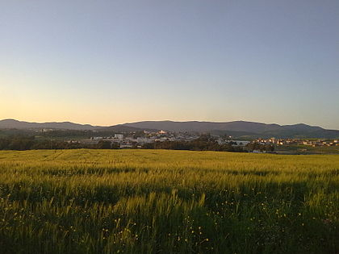
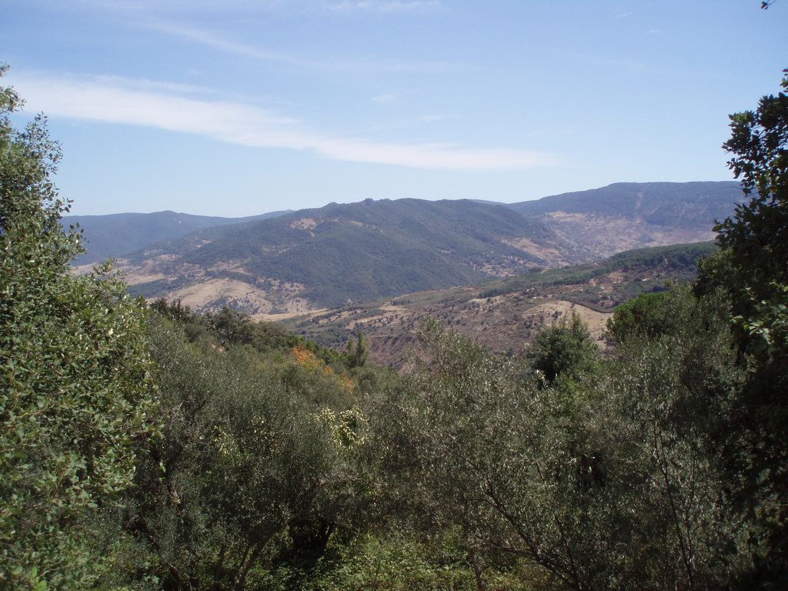
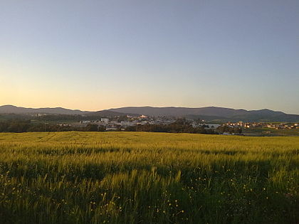
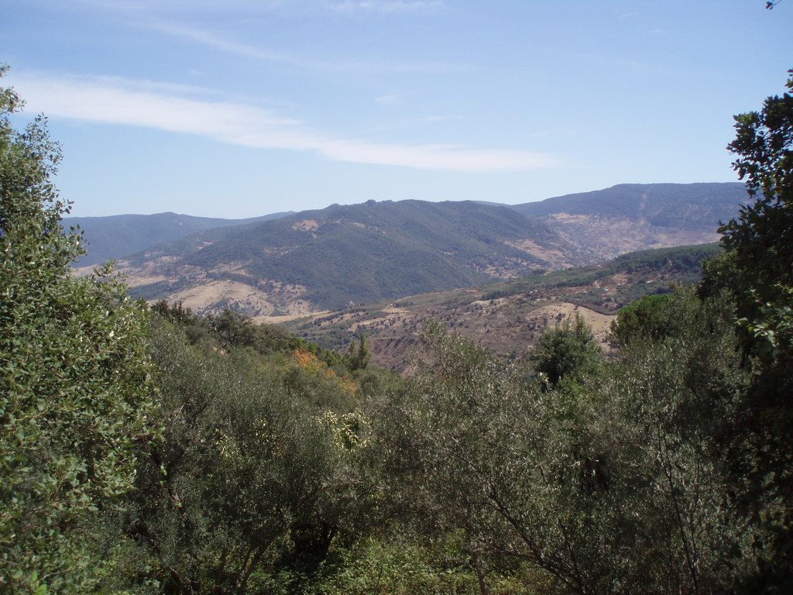

Jendouba , nommée Souk El Arba jusqu'au 30 avril 19664, est une ville du Nord-Ouest de la Tunisie située à 154 kilomètres de Tunis et à cinquante kilomètres de la frontière algéro-tunisienne. Elle se trouve dans la vallée de la Medjerda au centre d'une plaine fertile.

Héritière et prolongement de l'antique cité de Bulla Regia, le noyau de la ville moderne de Jendouba commence à prendre naissance autour de la gare, ouverte peu avant l'instauration du protectorat français le 1er septembre 1879. Devenue municipalité le 25 septembre 1887, la ville se développe, dans un premier temps, du côté nord de la ligne de chemin de fer puis s'étend peu à peu vers le sud. Son nom originel de Souk El Arba, soit « marché du mercredi », est lié directement au jour du marché hebdomadaire qui se tenait chaque mercredi

Jendouba et de sa région est historiquement fondée sur la céréaliculture, l'élevage, les cultures maraîchères et l'arboriculture, même si on assiste depuis la création des zones industrielles de Bulla Regia et El Ertiah à une industrialisation progressive de Jendouba et son agglomération.


 


